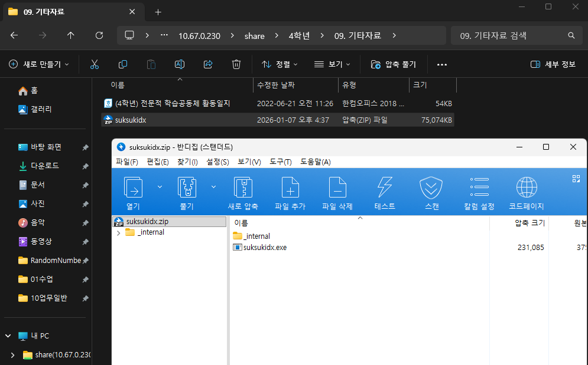
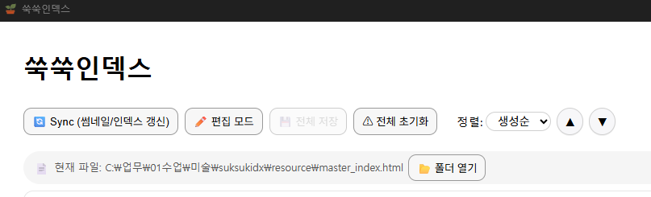
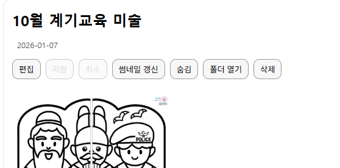
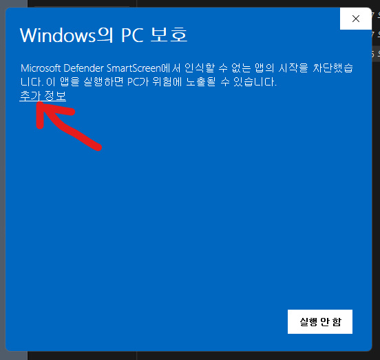
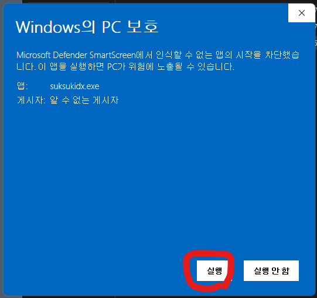

1. 동작 원리
1) Sync를 하면
- resource 폴더 안의 각 하위 폴더를 스캔하여 카드 정보를 캐시에 생성합니다.
resource/master_index.html에 전체 카드 목록(마스터 인덱스)을 생성/갱신합니다.resource/<각 폴더>/index.html에 해당 폴더의 카드 정보를 생성/갱신합니다.
2) 실행 중 카드 정보를 편집하면
- 카드의 캐시 정보가 갱신되고, 변경 사항이 마스터 인덱스/각 폴더 인덱스에 반영됩니다.
- 카드 단위 저장 시 해당 카드 범위의 동기화가 일어나므로, 보통 전체 Sync를 매번 할 필요는 없습니다.
2. 실행 방법
1) 협의실 컴퓨터(4학년 미술 수업 자료 포함 패키지)
바탕화면의 suksukidx 폴더에서 suksukidx.exe를 실행하면 됩니다. USB로 suksukidx 폴더 전체를 복사해 선생님 컴퓨터의 적당한 위치로 옮겨 사용할 수 있습니다.
- 권장 위치: 예)
C:\Users\(사용자)\Documents\suksukidx - 피해야 할 위치:
C:\Program Files,C:\Windows등 특수 권한이 필요한 폴더 - 사용 흐름:
resource폴더에 자료 추가 → 쑥쑥인덱스에서 Sync
2) 다른 학년 선생님(자료 미포함 zip 배포본)
아라드라이브 > 4학년 > 09.기타자료에 올려둔 suksukidx.zip을 사용합니다. (여기에는 4학년 미술 수업 자료가 포함되어 있지 않습니다.)
- suksukidx.zip을 선생님 PC의 로컬 폴더로 복사합니다.
- 압축을 해제하면 suksukidx.exe와 _internal 폴더가 보입니다.
- suksukidx.exe를 1회 실행하면 resource 폴더가 자동 생성됩니다.
- resource 폴더에 자료를 넣고, 쑥쑥인덱스에서 Sync합니다.

pic.2 — zip 배포본 압축 해제 후 구성
3. 툴박스 기능
툴박스에는 Sync(썸네일/인덱스 갱신), 편집 모드, 전체 저장, 전체 초기화, 정렬 버튼이 있습니다.
- Sync: 인덱스를 생성하거나 갱신합니다.
- 편집 모드: 전체 카드를 동시에 편집할 수 있습니다.
- 전체 저장: 편집 모드에서 입력한 내용을 저장합니다.
- 전체 초기화: 레지스트리, 인덱스 정보, CSS 파일, 썸네일 폴더/파일을 모두 삭제합니다.
※ 실제 자료 파일은 삭제하지 않고, “카드에 입력해 둔 정보/생성된 인덱스”만 초기화됩니다.

pic.3 — 툴박스(상단 버튼) 위치 예시
4. 카드 기능
각 카드에는 편집, 저장, 취소, 썸네일 갱신, 숨김, 폴더 열기, 삭제 버튼이 있습니다.
편집: 카드에 정보를 입력합니다.
저장: 입력한 정보를 저장합니다. (카드별 sync 포함)
저장: 입력한 정보를 저장합니다. (카드별 sync 포함)
취소: 편집 과정을 취소합니다.
숨김: 마스터 인덱스에서 해당 카드를 제외합니다.
숨김: 마스터 인덱스에서 해당 카드를 제외합니다.
썸네일 갱신: 폴더 내 이미지 → PDF/동영상 순으로 썸네일을 생성합니다.
자동 캡처가 마음에 들지 않으면, 원하는 썸네일 이미지를 폴더에 넣고 썸네일 갱신을 누르세요.
자동 캡처가 마음에 들지 않으면, 원하는 썸네일 이미지를 폴더에 넣고 썸네일 갱신을 누르세요.
삭제: 실제 폴더를 삭제하는 기능이 아닙니다.
Sync가 생성한 “인덱스 정보(카드 출력용)”를 삭제하는 버튼입니다.
Sync가 생성한 “인덱스 정보(카드 출력용)”를 삭제하는 버튼입니다.

pic.4 — 카드 버튼(편집/저장/취소/썸네일/숨김/열기/삭제) 예시
5. 실행 과정에서 발생할 수 있는 문제
1) Defender가 실행을 제한하는 경우
“추가 정보”를 클릭하고 “실행” 버튼이 활성화되면 클릭해서 실행하세요.

pic.5 — Windows Defender 경고 화면 예시

pic.6 — “추가 정보” 후 실행 버튼 활성화 예시
2) 실행/Sync가 느리거나 멈춘 것처럼 보이는 경우 (AhnLab MDS Agent)
교육청 네트워크에 연결된 컴퓨터에서는 실행 파일을 실행하면 실시간으로 분석하여 악성 코드 유무를 검토할 수 있습니다. suksukidx.exe 또는 PDF/동영상 캡처 도구를 검토하는 과정이며, 보통 각 컴퓨터에서 처음 실행될 때 1회만 발생합니다. 다음 실행부터는 지연이 크게 줄어들 수 있습니다.
3) 네트워크 공유 폴더에서 실행하지 마세요
네트워크 공유 폴더(아라 드라이브 등)에서는 경로 인식 문제로 unhandled exception이 발생할 수 있습니다.
반드시 zip 파일을 로컬 폴더로 복사 → 압축 해제 → suksukidx.exe 실행 순서로 사용하세요.
6. 선생님들께 드리는 부탁
사용 중 문제가 발생하면 제게 쪽지로 알려주세요. 이때 구체적인 증상과 로그 정보를 함께 첨부해 주시면 원인 파악에 큰 도움이 됩니다.
- “안 돼요”만 적으면 원인 추적이 어렵습니다. (윈도우 개발 환경에서 발생할 수 있는 문제의 원인이 다양합니다.)
- 로그 파일 경로:
suksukidx/logs/suksukidx.log - 가능하면 “언제/무슨 버튼을 눌렀는지/무슨 화면에서 멈췄는지”를 같이 적어 주세요.